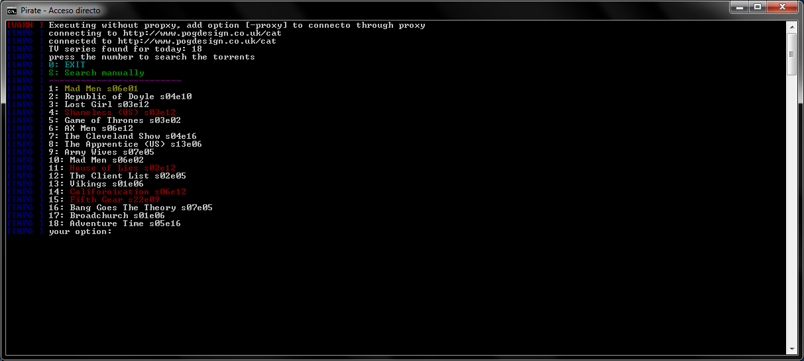
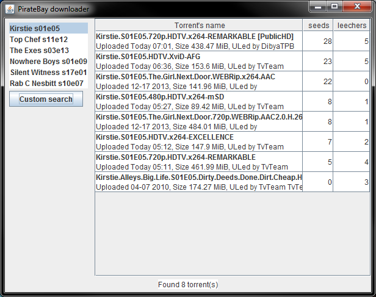
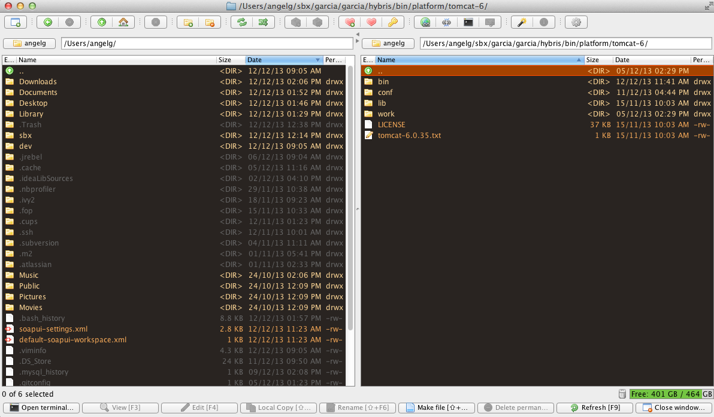
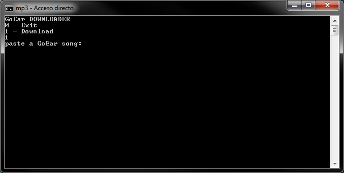

PirateBay Downloader
Github site
This project connects to a calendar tv site and checks the TV shows of the day,
you can choose one and it will search it in Pirate Bay and present on screen a list with the torrents found.
You need to configure where is installed your uTorrent application and some other properties. Is a console and gui environment

I'm still working on the feel and look of the GUI version.

muCommader fork
Github site :: muCommander site
This great open Java file manager is available for almost all the OS.
I forked it because there were some missing "important" features as the copy
in background or the open a terminal in the current folder (this only works for Windows and Mac,
currently I don't have any Linux machine running to test it, feel free to make a
pull request).
I also created a new dark theme for it.

mp3 Downloader
Github site
Using the base of the PirateBay Downloader, it allows to download mp3 using a console environment.
